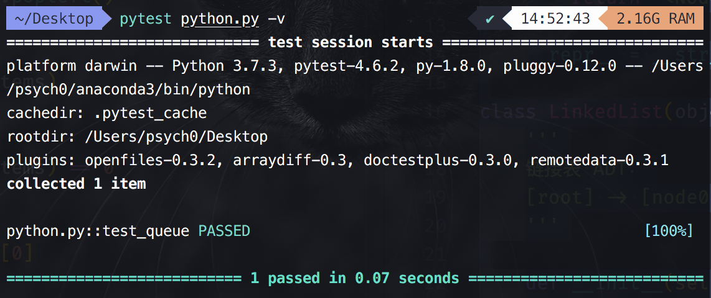
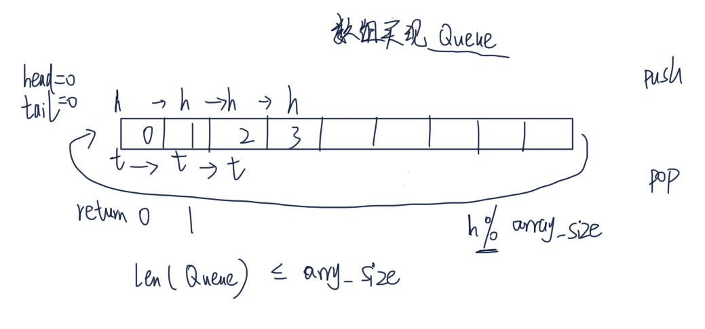
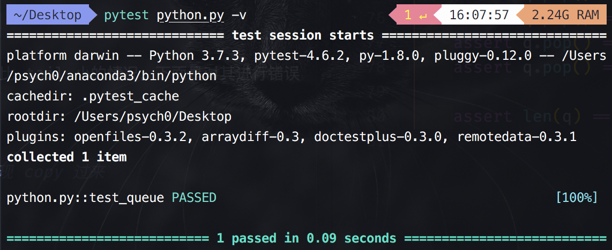

队列是先进先出结构(FIFO, first in first out)， 栈是后进先出结构(LIFO, last in first out)。
队列的实现：
现在考虑我们用什么来实现队列结构。回想之前说过在实现某种结构选取结构时需要考虑的事项：
队列主要频繁进行的操作是入队和出队。
到目前我们学习的结构有 Array、List、LinkedList（单列表）、DLL（双链表）。Array 也可以实现，但是我们暂时先不考虑。如果使用 List，那么如果要在 list 头插入一个节点，那么后面的节点都需要向后移动，时间复杂度是 。然后看单链表。之前我们在实现单链表的时候就实现了 append() 和 popleft() 方法，可以用这两个方法实现入队（append()）和出队（popleft()）操作，时间复杂度都是 。双端链表也可以实现，但可能会比较复杂，这里就先不用它实现了。
队列结构的代码实现：
from collections import deque # 这里直接将前面单链表的实现代码 copy 过来 class Node(object): def __init__(self, value=None, next=None): self.value = value self.next = next def __str__(self): """方便你打出来调试，复杂的代码可能需要断点调试""" return '<Node: value: {},next ={}>'.format(self.value, self.next) __repr__ = __str__ class LinkedList(object): ''' 链接表 ADT： [root] -> [node0] -> [node1] -> [node2] ''' def __init__(self, maxsize=None): ''' :param maxsize: int or None, 如果是 None 则可无限扩充 ''' self.maxsize = maxsize self.root = Node() # 默认 root 节点指向 None self.tailnode = None self.length = 0 def __len__(self): return self.length def append(self, value): # O(1) # 如果链表的长度不是无限长（即 self.maxsize 不是 None；是 None 就说明没有给 # self.maxsize 赋值，即为无限长），且当前所占的长度（len(self)）超过了链表最大的 # 长度（self.maxsize） if self.maxsize is not None and len(self) >= self.maxsize: raise Exception('LinkedList is Full!') node = Node(value) # 构造节点 tailnode = self.tailnode # 得到当前的尾部节点 # 说明该链表还没有 append 过，length = 0，所以直接将该节点追加到 root 后 if tailnode is None: self.root.next = node # 将当前节点的对象赋值给 self.root 节点的 next 值 else: # 否则追加到最后一个节点的后边，并更新最后一个节点是 append 的节点 tailnode.next = node # 将该节点设置为链表尾部节点的 next 值 self.tailnode = node self.length += 1 # 该方法实现从左边插入节点；即每次都插入到 root 节点的后边 def appendleft(self, value): if self.maxsize is not None and len(self) >= self.maxsize: raise Exception('LinkedList is Full!') node = Node(value) # 如果原链表为空，说明现在只有个 root 节点；因为插入的节点必须要在 root 的后面， # 所以直接将 tailnode 设置为该节点就可以了 if self.tailnode is None: self.tailnode = node headnode = self.root.next # 将原来节点 root 的下一个节点先存在 headnode 中 self.root.next = node # 将该节点设置为 root 的下一个节点 node.next = headnode # 将原来 root 后面的节点“接到”刚新建的该节点后面 self.length += 1 def __iter__(self): for node in self.iter_node(): yield node.value def iter_node(self): '''遍历；从 head 节点到 tail 节点''' curnode = self.root.next # 获取 root 之后的头节点 # 从第一个节点开始遍历；但是没有遍历到 tailnode while curnode is not self.tailnode: yield curnode curnode = curnode.next # 移动到下一个节点 if curnode is not None: # 如果 tailnode 不是 None，就返回 tailnode yield curnode def remove(self, value): # O(n) ''' 删除包含值的一个节点，将其前一个节点的 next 指向被查询节点的下一个即可 :param value: ''' prevnode = self.root # prevnode 用来存储前一个节点；这里先把它指向 root 节点 for curnode in self.iter_node(): # 遍历从 head 节点到 tail 节点 # 这里需要结合后面的 else 部分的代码进行理解 # 如果当前节点是要删除的节点 if curnode.value == value: prevnode.next = curnode.next # 将 prevnode 节点的下一个值指向该节点的下一个节点（因为该节点即将被删掉） if curnode is self.tailnode: # 如果当前节点正好是尾部节点 if prevnode is self.root: # 看一下它前面的节点是不是 root 节点 self.tailnode = None # 如果是，那就将尾部节点设置为 None（该节点到后面也会被删掉） else: self.tailnode = prevnode # 如果不是，那么就将 prevnode 节点设置为尾节点；因为此时 curnode 后面已经没有其它节点了 del curnode # 删掉当前节点 self.length -= 1 return 1 # 表明删除成功 else: # 如果当前节点不是要删除的节点，那么就将当前 prevnode 指向该节点 prevnode = curnode return -1 # 表明删除失败 def find(self, value): # O(n) ''' 查找一个节点，返回序号，从 0 开始 :param value: ''' index = 0 for node in self.iter_node(): # 我们定义了 __iter__，这里就可以用 for 遍历它了 if node.value == value: return index index += 1 return -1 # 没找到 def popleft(self): # O(1) ''' 删除第一个链表节点 ''' if self.root.next is None: # 如果是 None，就说明是空链表，没什么可删的 raise Exception('pop from empty LinkedList') headnode = self.root.next # 先将 root 后面的节点“存储”在 headnode 中（即 headnode 指向 root 后面的节点）；这个节点就是后面要删除的节点 self.root.next = headnode.next # 将要 root 的 next 指向要删除的节点（headnode）的后面一个节点 value = headnode.value # 得到要删除的节点的值；后面返回要用到 self.length -= 1 if self.tailnode is headnode: # 如果是单节点 self.tailnode = None # 那么（将该节点删除后）要将 tailnode 设置为空 del headnode # 删掉该节点 return value def clear(self): for node in self.iter_node(): del node self.root.next = None self.length = 0 self.tailnode = None # 该部分理解时结合前面的说明部分 def reverse(self): ''' 反转链表 ''' # prevnode：前一个节点 # curnode：当前节点 # nextnode：下一个节点 curnode = self.root.next # 初始化将当前节点指向头节点 self.tailnode = curnode # 记得更新 tailnode；这个只需要更新一次就好了 prevnode = None # 初始化前一个节点为 None while curnode: # 只要当前节点非空节点 nextnode = curnode.next # 将 nextnode 指向当前节点后面的那一个节点 curnode.next = prevnode # 将 curnode 的 next 设为前一个节点 if nextnode is None: # 如果 nextnode 是 None，说明已经到了尾部节点 self.root.next = curnode # 将尾部节点设置为 root 节点 # 为下一次循环更新“做准备” prevnode = curnode # 将 curnode 节点更新为 prevnode 节点 curnode = nextnode # 将 nextnode 节点更新为 curnode 节点 ###################################################### # 下边是 Queue 实现 ###################################################### class EmptyError(Exception): """自定义异常""" pass class Queue(object): def __init__(self, maxsize=None): self.maxsize = maxsize self._item_link_list = LinkedList() def __len__(self): return len(self._item_link_list) def push(self, value): # O(1) """ 队尾添加元素 """ return self._item_link_list.append(value) def pop(self): """队列头部删除元素""" if len(self) <= 0: raise EmptyError('empty queue.') return self._item_link_list.popleft() def test_queue(): q = Queue() q.push(0) q.push(1) q.push(2) assert len(q) == 3 assert q.pop() == 0 assert q.pop() == 1 assert q.pop() == 2 import pytest with pytest.raises(EmptyError) as excinfo: # 我们来测试是否真的抛出了异常 q.pop() # 继续调用会抛出异常 assert 'empty queue.' == str(excinfo.value) class MyQueue: """ 使用 collections.deque 可以迅速实现一个队列 """ def __init__(self): self.items = deque() def append(self, val): return self.items.append(val) def pop(self): return self.items.popleft() def __len__(self): return len(self.items) def empty(self): return len(self.items) == 0 def front(self): return self.items[0]
运行 pytest python.py -v 结果如下：

用 Array 实现队列代码实现：
用 Array 也可以实现队列，只不过数组是预先分配固定内存的，所以如果你知道了队列的最大长度，也是可以用数组来实现的。
用 Array 实现队列的总体思路如下：

核心是通过 head 和 tail 两个指针的移动可以实现先进先出的效果。
用 Array 实现队列它的实现很简单，但是缺点是需要预先知道队列的长度来分配内存。
具体代码如下：
# 这里直接将前面的 Array 实现 copy 过来 class Array(object): def __init__(self, size = 32): self._size = size self._items = [None] * size # 注意 [None] 是一个 list def __getitem__(self, index): return self._items[index] def __setitem__(self, index, value): self._items[index] = value def __len__(self): return self._size def clear(self, value=None): for i in range(len(self._items)): self._items[i] = value def __iter__(self): for item in self.__items: yield item ###################################################### # 用 Array 实现 Queue ###################################################### class FullError(Exception): pass class ArrayQueue(object): def __init__(self, maxsize): self.maxsize = maxsize self.array = Array(maxsize) self.head = 0 self.tail = 0 def push(self, value): if len(self) >= self.maxsize: # 如果现在队列的长度大于或等于 array 的最大长度，那么就不能继续 push 抛出一个错误 raise FullError('queue full.') self.array[self.head % self.maxsize] = value # 这里理解的时候可以参考下前面的图示；之所以要用 % 二不是直接移动 head，是因为取完之后还需要回到头部重新开始取 self.head += 1 def pop(self): value = self.array[self.tail % self.maxsize] self.tail += 1 return value def __len__(self): return self.head - self.tail # 这里有一个点需要注意的是，head 和 tail 的值一直是往上加不会减小的；但是如果一开始没有 push 而只是 pop，那么可能会导致 tail 的值比 head 大从而导致 len() 调用后的值为负数 def test_queue(): import pytest size = 5 q = ArrayQueue(size) for i in range(size): q.push(i) with pytest.raises(FullError) as excinfo: q.push(size) assert 'queue full.' in str(excinfo.value) assert len(q) == 5 assert q.pop() == 0 assert q.pop() == 1 q.push(5) assert len(q) == 4 assert q.pop() == 2 assert q.pop() == 3 assert q.pop() == 4 assert q.pop() == 5 assert len(q) == 0
运行 pytest python.py -v 结果如下：

上面的代码中可能会出现 head 比 tail 小的情况。下面是对其进行错误抛出处理后的对应代码：
# 这里直接将前面的 Array 实现 copy 过来 class Array(object): def __init__(self, size = 32): self._size = size self._items = [None] * size # 注意 [None] 是一个 list def __getitem__(self, index): return self._items[index] def __setitem__(self, index, value): self._items[index] = value def __len__(self): return self._size def clear(self, value=None): for i in range(len(self._items)): self._items[i] = value def __iter__(self): for item in self.__items: yield item ###################################################### # 用 Array 实现 Queue ###################################################### class FullError(Exception): pass class MissingError(Exception): pass class ArrayQueue(object): def __init__(self, maxsize): self.maxsize = maxsize self.array = Array(maxsize) self.head = 0 self.tail = 0 def push(self, value): if len(self) >= self.maxsize: # 如果现在队列的长度大于或等于 array 的最大长度，那么就不能继续 push 抛出一个错误 raise FullError('queue full.') self.array[self.head % self.maxsize] = value # 这里理解的时候可以参考下前面的图示；之所以要用 % 二不是直接移动 head，是因为取完之后还需要回到头部重新开始取 self.head += 1 def pop(self): value = self.array[self.tail % self.maxsize] self.tail += 1 return value def __len__(self): if self.head < self.tail: raise MissingError('Please push the element first.') return self.head - self.tail # 这里有一个点需要注意的是，head 和 tail 的值一直是往上加不会减小的；但是如果一开始没有 push 而只是 pop，那么可能会导致 tail 的值比 head 大从而导致 len() 调用后的值为负数 q = ArrayQueue(3) # for i in range(3): # q.push(i) print(q.pop()) print(q.pop()) print(q.head) print(q.tail) # # q.push(100) print(q.__len__())